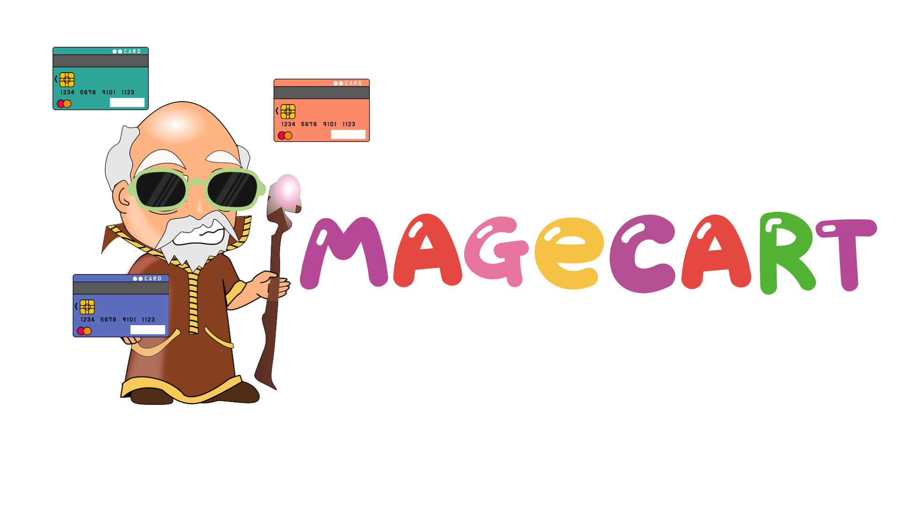

웹 스키밍 공격을 하는 단체로, 온라인 쇼핑몰 결제 화면의 취약점을 이용하여 사용자가 입력하는 정보를 유출하거나 복제합니다.
코로나로 인해 늘어난 온라인 쇼핑몰을 공격하여 약 5만개 이상의 웹사이트가 공격을 당했다고 합니다.
주 공격 방법으로 웹 스키밍과 *폼재킹을 사용합니다.

💡TMI: Magecart라는 이름은 Magento라는 오픈 소스 이커머스 플랫폼을 첫 목표로 삼으면서 ‘쇼핑 카트’와 Magento를 합쳐서 Magecart라는 이름이 탄생했습니다.